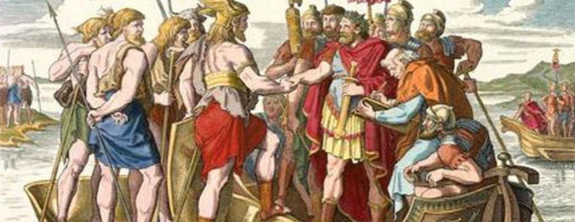
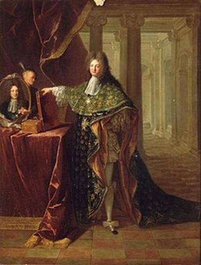
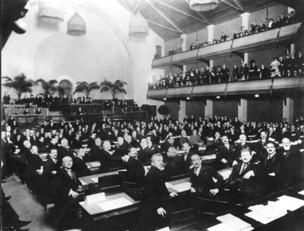
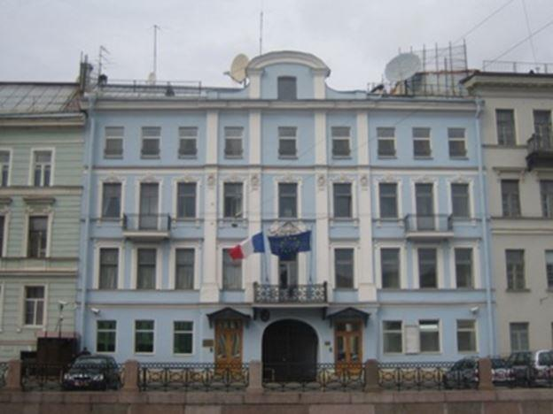

Au début du développement des sociétés humaines, celles-ci ont eu besoin de communiquer, de s’organiser en groupes, en peuples puis en royaumes ; d’échanger des informations, de négocier, de s’allier contre des ennemis communs, d’unir leurs destinées par des mariages et d’organiser leur commerce.
Ces états dotés d’administrations, de fonctionnaires, d’une organisation militaire auront recours tout au long de leur histoire à du personnel très instruit2 qui aura la charge de représenter non seulement leur souverain auprès d’un royaume étranger mais également de l’informer et le renseigner de tout ce qui pouvait être utile à sa politique.
La diplomatie commence avec les premières cités-États dans la Grèce antique. Les diplomates3 étaient alors envoyés pour des négociations spécifiques et revenaient immédiatement une fois leur mission conclue.
Le déclin des cités-États dans l'Europe du moyen âge réduit cette activité, sauf au royaume d’Espagne, qui exercera des relations diplomatiques avec les différents empires et royaumes d'Europe, du Maghreb et du Moyen-Orient. Cette activité s’affirmera véritablement en Europe dès la Renaissance4 car l’information devenait de plus en plus nécessaire, dans un système ou les nations partageaient des territoires proches, par conséquent la communication était essentielle.
En effet, les princes ne pouvaient plus dépendre des informations provenant des seules marchands ou voyageurs ou envoyés temporaires, mû par leurs intérêts personnels. Ils avaient besoin d’informations fiables et constantes dans l’Europe en pleine mobilité et riche en échanges qui va donc s’affirmer5 dès le début de la Renaissance. Venise est la première à envoyer de tels représentants et leurs rapports constituent aujourd’hui une source précieuse d’information sur l’Europe du 15ème siècle.
Pour un souverain éclairé, il était indispensable de pouvoir connaître l’évolution des royaumes voisins amis ou ennemis. Aussi son ambassadeur écrit des dépêches à son ministre, à son souverain. Il y relate l’évolution de la politique du pays, les querelles de personnage de la cour, les personnalités d’avenir à cultiver, les éventuels préparatifs de guerre que l’on s’efforce de garder secrets, les questions dynastiques qui sont fondamentales, l’état des finances, etc.. Pour ce faire l’ambassadeur a recours à une correspondance chiffrée, codée, elle est plus ou moins complexes car le secret est nécessaire, il permet la surprise, l’anticipation sur la réaction publique, l’action discrète
En France, Hugues de Lionne (1611-1771), fit ses premiers pas de diplomate auprès du cardinal Mazarin et participa à la négociation des traités de Westphalie (1648), des Pyrénées (1659). Ambassadeur à Rome en 1655, à Madrid en 1658 et à francfort il dirigea les affaires étrangères sous Louis XIV (1663-1671) Il prépara la guerre de dévolution en contribuant à l’isolement diplomatique de l’Espagne en signant un traité secret avec l’Autriche, puis la guerre de Hollande par l’alliance avec l’Angleterre, s’assurant aussi de la neutralité de la Suède avec diverses principautés allemandes.
L’organisation des États verra évoluer en France le corps diplomatique6 qui s’hiérarchise et se structure, et en fait une nation précurseur dans ce domaine. Ainsi le diplomate français Colbert de Torcy a l'idée de créer une académie politique en 1712 pour former des secrétaires d'ambassade et François de Callières publiera en 1716 un ouvrage de référence qui s’intitulera : « De la manière de négocier avec les souverains, de l'utilité des négociations, du choix des ambassadeurs et des envoyés, et des qualités nécessaires pour réussir dans ces emplois. ».
LE CHOIX DES ROIS
Les personnalités choisies pour devenir des ambassadeurs sont généralement nommées par un souverain puisant dans son entourage aristocratique proche. Il faut qu’il soit de haute naissance afin qu’il puisse le représenter, être proche conseiller connu et fidèle et surtout avoir une certaine expérience et compétence dans les affaires d’état.
Aussi la majorité des ambassadeurs7 sera choisie par leur souverain et son ministre des affaires étrangères parmi la noblesse qui fréquentent la cour et proches de la famille royale ou de ses favoris ou favorites8 9. Ils seront en majorité issus parmi les gens lettrés, membres de la magistrature et du clergé. Mais comme nous sommes dans un monde de cour, nombreux furent également les favoris qui furent nommés à un poste d’ambassadeur par leur proximité immédiate de la famille royale.
L’avantage pour un souverain de nommer des gens de haute naissance et fortuné lui concédait le privilégie de se passer de les rémunérer. Généralement les ambassadeurs pourvoyaient et couvraient presque l’ensemble de leurs dépenses « diplomatiques » à la grande satisfaction du roi. Le poste jouissant d’une certaine notoriété et était convoité par beaucoup de familles de l’aristocratie d’église ou de l’armée.
Une fois nommé, le nouvel ambassadeur exerçait ses fonctions au sein d’une ambassade10 appelé aussi légation, l’ambassadeur distingué par son souverain était accrédité auprès des autorités locales pour la procédure d’agrément puis la présentation des lettres de créances. L’exercice de leur mission a très rapidement conduit toutes les nations à s’accorder sur l’établissement de privilèges et immunités facilitant l’accomplissement des missions de leurs diplomates, ainsi la liberté des communications officielles l’inviolabilité des locaux de la mission diplomatique, les archives et documents ne peuvent être réquisitionnés.
LES INVENTIONS CHANGENT ET BOUSCULENT LA DIPLOMATIE ANCIENNE
Après les guerres napoléoniennes, et en particulier dès la tenue du congrès de Vienne11 en 1815, les déplacements de ministres ou de chefs d’états devenaient de plus en plus fréquents.
L’arrivée du chemin de fer, le développement du télégraphe et de la poste sont des progrès qui bousculent la diplomatie car les déplacements sont devenus plus rapides ainsi que les correspondances ce qui permet des comptes rendus et des instructions plus rapides.
La diplomatie ancienne était caractérisée par son caractère personnel, le petit nombre d’acteurs et sa forme exclusivement bilatérale, avec la multiplication des États, la variété des questions traitées dans le cadre diplomatique, et l’apparition des premières organisations internationales amèneront une révolution des méthodes et des moyens.
L’évolution rapide des relations internationales du XX siècle aura pour source la multiplication des États et l’apparition d’organisations internationales. Elle s’enclenche dès la fin des empires coloniaux de la première guerre mondiale, aboutissant à compter de 1919 à un mode de gestion permanent des relations entre États et au développement de la diplomatie.
Ainsi on verra naître la Société des Nations (SDN), annexe du traité de Versailles12, qui visera la sécurité collective par la négociation permanente puis la création de l’Organisation des Nations Unies en 1945 qui aura pour mission principale le maintien de la paix et des grands principes qui vont structurer les relations internationales13
La multiplication des États à l’issue des Indépendance de la seconde décolonisation dans les années 1960 et la fin du bloc soviétique en 1991 font sortir les relations internationales du cadre uniquement européen du XIX siècle et par la force des choses ont amenés les services diplomatiques à s’adapter.
En effet, les exigences en matière de rapidité et de compétitivité, l’utilisation des télécommunications, le développement des ambassades au plus près des acteurs politiques, et l’utilisation des moyens de transports plus rapides afin de ne pas attendre le travail écrit se sont conjugués à une étude plus fine de la presse pour l’information et le traitement dire ces ministères avec leurs homologues étrangers.
LES RELATIONS DIPLOMATIQUES ET CONSULAIRES AU XXI SIÈCLE
Elles sont une des manifestions de l’apparition du phénomène étatique. Le critère le plus sûr de la souveraineté d’un État est le fait qu’il entretien effectivement, par l’intermédiaire de ses propres agents sur un pied d’égalité, des relations diplomatiques et consulaires avec d’autres États souverains et qu’il soit représenté auprès d’organisations internationales en participant à leurs activités.
Aux relations entre États, se sont ajoutées les relations diplomatiques que les États entretiennent avec les organisations internationales. Un État peut abriter sur son territoire une mission diplomatique accréditée auprès d’une organisation internationale alors que lui-même peut ne pas avoir de relations diplomatiques avec cet État.
Ambassade de la Fédération de Russie à Paris
Missions permanentes auprès des organisations internationales : New York, Genève, Paris, Rome, Vienne, etc. Les organisations internationales elles-mêmes ont des représentations permanentes dans de nombreux États : ONU, UE, etc. Par contre il n’existe pas de convention internationale en vigueur sur ces sujets, les missions permanentes des États membres dont largement alignés sue les ambassades bilatérales.
La diplomatie moderne répond dès lors aux nouveaux besoins par sa spécialisation, dans la variété des domaines traités, et la spécialisation de ces diplomates ainsi que par une plus grande souplesse d’emploi. Bien que le secret soit le fondement d’un travail diplomatique il laisse aujourd’hui une place à une certaine ouverture par l’existence de point de presse, de communiqués.
Ainsi l’établissement s’exerce sous la forme d’une ambassade. Le chef de la mission diplomatique est officiellement accrédité auprès des autorités locales car les autres membres ne le sont que par simple notification. L’accréditation peut être multiple et un diplomate peut être appelé pour consultation par le pays d’envoi, déclarés persona non grata par le pays hôte. La convention de Vienne prévoit l’accréditation d’une même personne par plusieurs États.
L’ambassadeur a pour mission non seulement de représenter l’État, de protéger ses intérêts et ses ressortissants mais également de négocier avec le gouvernement accréditaire, s’informer de l’évolution de la situation de l’État accréditaire, promouvoir les relations bilatérales amicales. Pour l’exercice de sa mission il bénéficie de la liberté des communications officielles, de l’immunité juridictionnelle et de l’inviolabilité personnelle donc absolue, il ne peut être arrêté ou détenus.
Vladimir Poutine et l’ambassadeur de France en Russie, Sylvie Bermann
Il arrive que des tensions vives opposent des États sans que cela engendre une escalade guerrière, pour montrer sa désapprobation il existe diverses mesures dont la rupture diplomatique et la fermeture d’une représentation. Les ruptures se font par consentement mutuel il n’y a pas d’obligation et la rupture est un acte discrétionnaire par un État au terme d’un processus de dégradation des relations avec le pays hébergeant. La fermeture d’un poste diplomatique n’est pas synonyme de rupture des relations diplomatiques si une ambassade dans un pays voisin est accréditée. Dans le cas de la rupture l’État confie à un autre État le soin de représenter ses intérêts quand il en a les moyens.
Le cas des Consulats généraux est globalement codifié à celles des relations diplomatiques : établissement sur la base d’un consentement mutuel mais dont les fonctions sont principalement administratives. La particularité est qu’un établissement ou une rupture son indépendants des relations diplomatiques. Les consuls reçoivent une lettre de provision de l’État d’envoi et l’exequatur de la part du pays d’accueil.

N°15 Quai de la Moïka, ancien bâtiment du Consulat général de France à Saint-Pétersbourg
Ils sont chargés de la protection des intérêts de leur État d’envoi et de ses ressortissants. Ils favorisent le développement des relations commerciales, économiques, culturelles et scientifiques, d’exercer certaines fonctions concernant les nationaux (délivrance du passeport, etc.) de délivrer des visas. Les privilèges et immunités sont plus réduites et se limitent à l’inviolabilité des bureaux, mais pas de la résidence du consul général.
UNE CRÉATION TECHNOCRATIQUE BRUXELLOISE : LE SEAE
Alors que l’ensemble des pays membres de l’Union européenne continuent d’entretenir et d’assurer leurs missions traditionnelles diplomatiques bilatérales et multilatérales on créera une nouvelle entité bureaucratique en 2009 : le Service européen pour l'action extérieure14 ou SEAE.
Cet organe institutionnel de l'Union européenne, placé sous l'autorité d’un Haut Représentant de l'Union pour les affaires étrangères et la politique de sécurité, devait constituer le service diplomatique de l’Union Européenne, à la fois à Bruxelles et à l'étranger15.
Basé à Bruxelles, le SEAE compte un vaste réseau de représentants de l'UE avec des représentants ayant le statut d'ambassadeur et qui travaillent en collaboration avec les ministères des Affaires étrangères et de la défense des États membres de l'UE et les autres institutions européennes ; telles que la Commission européenne, le Conseil et le Parlement.
Dirigé par un Haut Représentant, qui est également vice-président de la Commission européenne, il est chargé de coordonner l'action extérieure de l'UE et l'élaboration et l'exécution de la politique de sécurité et de défense commune. Sous son autorité sont placés des fonctionnaires européens, des diplomates des services étrangers des États membres de l'UE et du personnel local.
Alors que l'Union européenne devrait jouer un rôle, selon ses défenseurs, de plus en plus important dans la diplomatie mondiale, le rôle du SEAE en essayant d'apporter de la cohérence et de la coordination au rôle international de l'UE posait la question légitime de la pérennité des représentations diplomatiques entre États membres de l’Union au sein de l’Europe.
En effet, les relations entre les États membres de l’UE semblaient décidées à Strasbourg et à Bruxelles et la prise de conscience de cette « relative évidence » aurait dû engager les chefs d’États et de gouvernement à une réflexion sur une évidente rationalisation des postes diplomatiques au sein de l’UE.
À la lumière des nombreuses crises diplomatiques ou des rencontres formelles des dernières années au sein de l’UE comme à l’étranger, ce n’est pas le Haut représentant qui est en charge de représenter les intérêts de l’UE, bien au contraire. Dernier exemple en date sera la réunion sur l’avenir de la Syrie qui rassemblent autour d’une table la Turquie, la Russie, l’Allemagne et la France. Alors qu’à la veille des élections européennes on nous focalise sur le « plus d’Europe » ce sont bien les nations considérées comme le plus puissantes qui gèrent l’avenir du continent européen.
Rien n’a donc véritablement changé, et le travail diplomatique stricto sensu continue d’être réalisé au sein de l’UE par les ambassades nationales et non par Bruxelles. Aussi le citoyen européen peu justement se demander de la nécessité de maintenir cette super structure qui emploi de très nombreux personnels grassement payés.
Car entretenir outre une telle représentation comme le SEAE dont la majorité des citoyens soucient guères voir en ignorent l’existence et …dont le travail est bien discret permettrait de faire des économies dont les finances européennes auraient bien besoin. La suppression de ce genre « d’usine à gaz technocratique bruxelloise » n’affecterait en rien les relations entre nations européennes.
A.W.
Notes :
1. Armand, Jean du Plessis de Richelieu, (1585-1642) Homme d’église, sa politique étrangère fut orientée contre les Habsbourg. Il réalisa une alliance avec la Suède (1631), avec les catalans contre l’Espagne (1642), favorisa le commerce maritime et la politique coloniale. Son travail pour l’abaissement de la puissance des Habsbourg a permis l’émergence de la prépondérance française à partir de 1648.
2. Les premiers ambassadeurs apparaissent en Italie à la fin du 15ème siècle entre cités du Nord de l’Italie, leur rôle était très similaire à celui des ambassadeurs actuels.
3. De diploma : du latin venu du grec, littéralement « plié en deux », d’où la diplomatique qui est l’étude des chartes, des traités. Par extension, le diplomate est celui qui s’occupe de ce gendre de documents officiels.
4. En France, Pierre Jeannin, s’illustra notamment comme médiateur lors des traités de paix entre l’Espagne et les Provinces unies. Marie de Médicis le nomma surintendant des finances en 1616.
5. Gengis Khan accueille des ambassadeurs permanents au 13ème siècle.
6. Traditionnellement, on pensait que le terme diplomatie avait été employé en tant que métier pour la première fois dans les discours de Simon-Nicolas-Henri Linguet en 1791 et Robespierre en 1792, mais il existe des occurrences plus anciennes : corps diplomatique dans une lettre du chevalier d'Éon en 1762 et dans un ouvrage en 1764.
7. De l’italien ambasciata qui vient lui-même du gaulois ambactos (client, serviteur).
8. François Joachim de Pierre de Bernis (1715-194) Homme d’église et protégé de Mme de Pompadour, ambassadeur à Venise puis ministre des affaires étrangères 51757-1758), ambassadeur à Rome (1768), cardinal. Il fut l’auteur du renversement des alliances, prélude à la guerre de sept ans (1756-1763 qui opposa d’un côté la France, la Russie, Saxe, Suède et Espagne et de l’autre la Grande Bretagne, Prusse et Hanovre, elle avait pour cause la volonté autrichienne de reprendre la Silésie et la rivalité coloniale franco-britannique. Il fut disgracié pour avoir conseillé la paix après la défaite de Rossbach (Victoire de Frédéric II sur les Français).
9. Etienne François duc de Choiseul, Remplace Bernis dans les fonctions de Secrétaire d’état aux Affaires étrangères de Louis XV grâce à Mme de Pompadour (1758-1761). Il conclut le Pacte de famille avec l’Espagne, réalise l’acquisition de la Corse (1768). Il recueillit la Lorraine, héritage du beau-père de Louis XV. Il travailla à arrêter les projets de la Russie en soutenant les Polonais et en armant les Turcs. Disgracié par Louis XV en 1772.
10. Ce mot apparait en 1387 dans la langue française. Il désignera longtemps d’abord la mission (le souverain enverra untel en ambassade auprès du souverain de tel pays).
11. Les Alliés se réunissent à Vienne sous l'égide de l’empereur d’Autriche et de son chancelier et ministre des Affaires étrangères, Metternich. La France se fait représenter par Talleyrand . Les négociateurs apprennent le 1er mars 1815, que Napoléon, a quitté l'île d'Elbe et débarqué à Golfe-Juan en vue de reprendre sa place à la tête de la France. Les anciens Alliés se remobilisent contre l'Usurpateur. La France, malgré les efforts de ses représentants, ne peut éviter une remise en cause du traité de Paris. Elle doit se préparer à la perte de quelques territoires et à une occupation militaire que consacrera un deuxième traité de Paris. Le congrès clôt ses travaux sans même attendre la défaite définitive de Napoléon 1er à Waterloo (18 juin 1815). Le congrès de Vienne reconstruit l’Europe profondément et le nouvel ordre européen est placé sous la protection de la sainte Alliance des grandes monarchies. In : www.Hérodote.net, 2017.
12. Le traité de Versailles est un traité de paix signé le 28 juin 1919 entre l'Allemagne et les Alliés à l'issue de la Première Guerre mondiale. Élaboré au cours de la conférence de Paris, le traité est signé le 28 juin 1919, date anniversaire de l'attentat de Sarajevo, dans la galerie des Glaces du château de Versailles, et promulgué le 10 janvier 1920. Il annonce la création de la Société des Nations (SDN) et détermine les sanctions prises à l'encontre de l'Allemagne et de ses alliés. Celle-ci, qui n'est pas représentée au cours de la conférence, est amputée de certains territoires et privée de ses colonies, et astreinte à de lourdes réparations économiques et à d'importantes restrictions de sa capacité militaire.
13. Egalite souveraine des États, Interdiction de la guerre et recours au règlement pacifique des différends, utilisation de la force uniquement en légitime défense et au titre du maintien de la paix (article VII).
14. Sa création découle du traité de Lisbonne entré en vigueur le 1er décembre 2009. L'article 27, paragraphe 3 du traité sur l'Union européenne, introduit par le traité de Lisbonne prévoit en effet : « Dans l’accomplissement de son mandat, le haut représentant s’appuie sur un service européen pour l’action extérieure. Ce service travaille en collaboration avec les services diplomatiques des États membres et est composé de fonctionnaires des services compétents du secrétariat général du Conseil et de la Commission ainsi que de personnel détaché des services diplomatiques nationaux. L’organisation et le fonctionnement du service européen pour l’action extérieure sont fixés par une décision du Conseil. Le Conseil statue sur proposition du haut représentant, après consultation du Parlement européen et approbation de la Commission. »
15. Le traité de Lisbonne établit clairement ce qui devrait guider l'Union européenne à l'échelle internationale : « L'action de l'Union sur la scène internationale doit être guidée par les principes qui ont présidé à sa création, au développement et à son élargissement, et qu'elle vise à promouvoir dans le monde : la démocratie, la primauté du droit, l'universalité et l'indivisibilité des droits de l'homme et des libertés fondamentales, le respect de la dignité humaine, les principes d'égalité et de solidarité, et le respect des principes de la Charte des Nations Unies et du droit international. »

Partager cette page